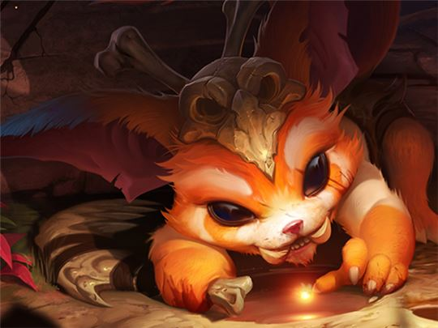

전사 / 난이도: 높음
고대 요들인 나르는 익살스러운 장난을 치다가도 어린아이 같은 변덕을 부려 벌컥 화를 내며, 그럴 때면 순식간에 거대한 몸집의 야수로 변하여 주변을 마구 때려부순다. 수천 년 동안이나 얼음 정수에 갇혀 있다가 풀려난 터라, 지금의 세계는 나르에게 진기하고 경이로운 세상이다. 호기심 많은 나르는 위험이 닥치면 오히려 즐거워하며, 뼈이빨 부메랑이든 옆에 서 있는 건물이든 닥치는 대로 집어들어 적에게 던진다.